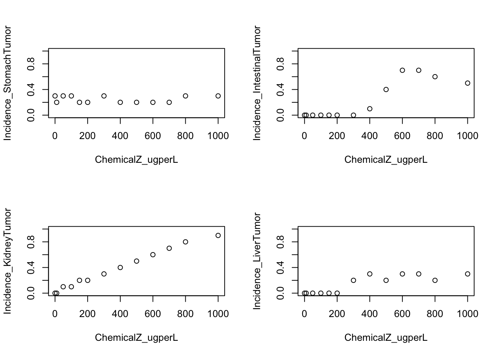
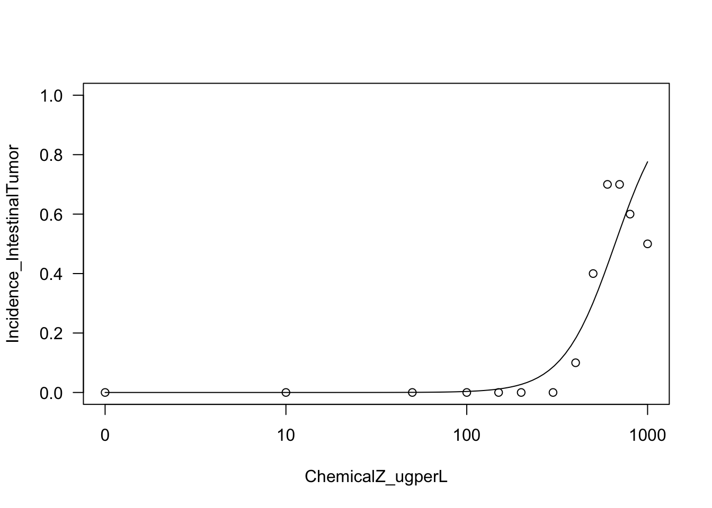
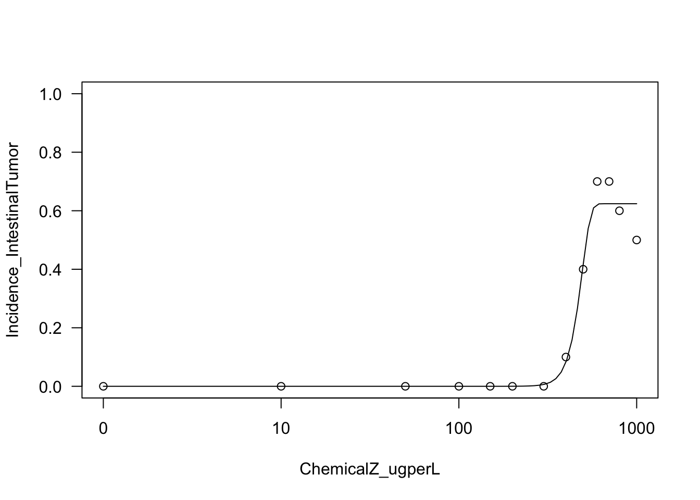
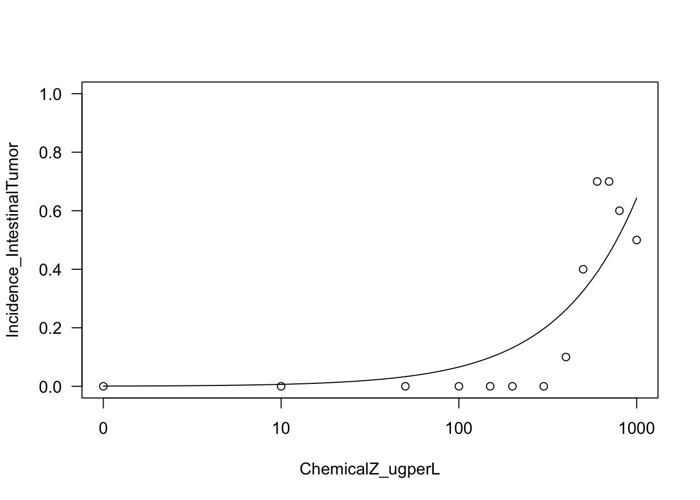
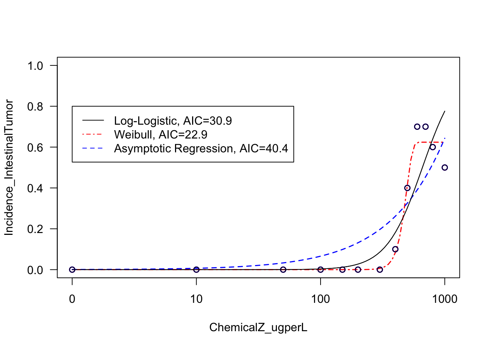
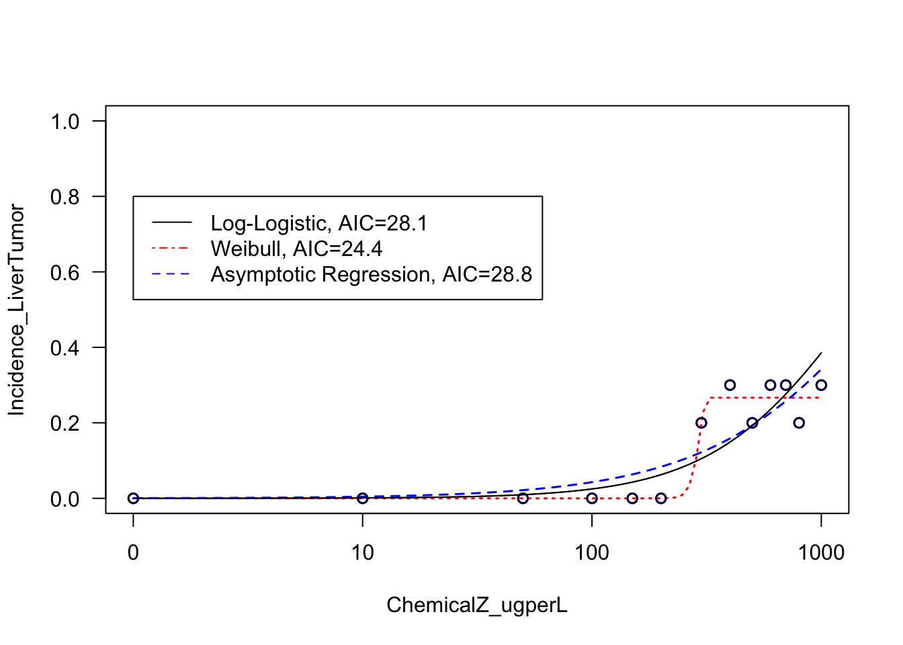

2.1 Dose-Response Modeling
This training module was developed by Dr. Kyle R. Roell and Dr. Julia E. Rager
Fall 2021
“The Dose Makes the Poison”
One of the most well-established principles in the field of toxicology is the concept, The Dose Makes the Poison. Record of this founding principle dates back to the 16th century, when the Swiss physician, Paracelsus, concluded that in sufficient quantities, everything had the potential to cause harm, and the only thing that differentiated something from being harmful or not was the dose. Findings have continued to support the principle that all substances have the potential to cause harm should the dose be sufficient, regardless of the source of an exposure/insult. This concept supports the critical need to evaluate and quantify dose-response relationships.
Dose-response Modeling
Dose-response modeling is a method used to quantitatively assess the relationship between an exposure to a chemical (or other stressor) and its related effects. The overall goal of these modeling efforts is to identify which exposure doses are harmful, and which aren’t, to human health.
The following summarize the main steps in dose-response modeling:
1. Plot data. Data from relevant epidemiological, clinical, and/or toxicological evaluations are first plotted. Data are plotted in an X-Y plane, where the doses (or concentration) of a chemical (or stressor) are along the x-axis and the response of interests are along the y-axis.
2. Test various curve fits. There are many different models that can be used to mathematically describe the relationships between doses and associated responses. Typically, several curve fit models are tested in a dose-response analysis to see which fit the data the best.
3. Identify the best fitting model curve. Results from the tested model curve fits are evaluated, and the model(s) which fit the data the best are identified.
4. Derive values to carry forward in your analyses, based on the best fitting curve model. Using the best fitting curve model(s), final benchmark doses (BMDs), benchmark dose lower bounds (BMDLs), and other types of points of departure (PODs) are derived, which then get carried forward in the analysis (e.g., chemical risk assessment).
Introduction to Training Module
This training module provides an overview on analyzing exposure-associated response/outcome data in relation to exposure concentration (or dose), resulting in the derivation of benchmark doses (BMDs). This topic is of high relevance to the field of environmental health, as BMDS represent values foundational to assessing risk in chemical safety evaluations, and therefore, ultimately dictating the levels at which chemicals are regulated. This module specifically analyzes animal tumor incidence rates in response to exposure to a fictitious chemical (referred to a Chemical Z) tested across 12 different concentrations in drinking water. This dataset was generated for the specific purposes of this exercise, to allow for some interesting curve fits and a comparison between tissue site sensitivity to an example chemical insult.
Training Module’s Environmental Health Questions
This training module was specifically developed to answer the following environmental health questions:
- Which target tissue demonstrated the overall highest incidence of tumor formation from any single dose of Chemical Z?
- Which target tissue’s tumor incidence seems to not be related to dose?
- When we generate scatter plots illustrating exposure concentration vs disease outcome, without curves fitted to the data, are we able to derive benchmark doses?
- Upon visual inspection of example log-logistic vs. Weibull model curve fits on the intestinal tumor response data, can we confidently determine which of these two models best fits these data?
- For the liver tumor response data, which model fits the resulting dose-response curve the best?
- For the liver tumor response data, what are the final resulting BMD and BMDL estimates from the best fitting curve model?
- In comparing between the intestinal vs liver datasets, which tissue is estimated to show tumor responses at a lower exposure dose?
Installing required R packages
If you already have these packages installed, you can skip this step, or you can run the below code which checks installation status for you. To install “bmd” package, you need to first install package “remotes”. This package allows users to install packages from remote repositories, including GitHub, to then be able to install “bmd” package from Github.
if (!require("Hmisc")) install.packages("Hmisc");
if (!require("drc")) install.packages("drc");
if (!require("remotes")) install.packages("remotes");
if (!require("drc")) remotes::install_github("DoseResponse/bmd")Loading R packages required for this session
# The describe function in the Hmisc package will be used to summarize a
# description of the dataset
library(Hmisc)
# drc package will be used create and plot dose response models
library(drc)
#bmd pacakge will be used to caculate the benchmark dose
library(bmd) For more information on the drc package, see its associated CRAN webpage and primary publication.
For more information on the bmd package, see its associated R Documentation file and primary publication
Loading the Example Dataset
Let’s start by loading the dataset needed for this training module. This dataset is a mock example that was generated for the purposes of this training module, in order to best capture variable types of dose-response relationships and resulting curve fits.
This specific dataset analyzes the relationship between exposure to a fictional chemical, chemical Z, in drinking water and tumor incidence in the stomach, intestine (small and/or large), kidney, and liver in mice. These mice were evaluated in a traditional two-year animal bioassay setting.
Note that animals are assumed to drink equivalent amounts of water each day for simplicity.
Loading the data
dose_response.data <- read.csv("Module2_1/Module2_1_DoseResponseData.csv")Data Viewing
Start with viewing the overall dimensions
dim(dose_response.data)## [1] 13 10Then viewing a list of the column headers
colnames(dose_response.data)## [1] "ChemicalZ_ugperL" "TotalNoAnimals_Tested"
## [3] "NoAnimals_StomachTumor" "Incidence_StomachTumor"
## [5] "NoAnimals_IntestinalTumor" "Incidence_IntestinalTumor"
## [7] "NoAnimals_KidneyTumor" "Incidence_KidneyTumor"
## [9] "NoAnimals_LiverTumor" "Incidence_LiverTumor"With this, we can see that data are included for various chemical Z doses (noted in the first column), followed by a column noting the total number of animals tested per dose (in the second column). Then, columns are included describing the number of animals, followed by incidence, of tumor formation across each tissue target of interest (i.e., stomach, intestine, kidney, and liver).
Viewing a quick summary of the values contained within this dataset
summary(dose_response.data)## ChemicalZ_ugperL TotalNoAnimals_Tested NoAnimals_StomachTumor
## Min. : 0 Min. :10 Min. :2.000
## 1st Qu.: 100 1st Qu.:10 1st Qu.:2.000
## Median : 300 Median :10 Median :2.000
## Mean : 370 Mean :10 Mean :2.462
## 3rd Qu.: 600 3rd Qu.:10 3rd Qu.:3.000
## Max. :1000 Max. :10 Max. :3.000
## Incidence_StomachTumor NoAnimals_IntestinalTumor Incidence_IntestinalTumor
## Min. :0.2000 Min. :0.000 Min. :0.0000
## 1st Qu.:0.2000 1st Qu.:0.000 1st Qu.:0.0000
## Median :0.2000 Median :0.000 Median :0.0000
## Mean :0.2462 Mean :2.308 Mean :0.2308
## 3rd Qu.:0.3000 3rd Qu.:5.000 3rd Qu.:0.5000
## Max. :0.3000 Max. :7.000 Max. :0.7000
## NoAnimals_KidneyTumor Incidence_KidneyTumor NoAnimals_LiverTumor
## Min. :0.000 Min. :0.0000 Min. :0.000
## 1st Qu.:1.000 1st Qu.:0.1000 1st Qu.:0.000
## Median :3.000 Median :0.3000 Median :2.000
## Mean :3.692 Mean :0.3692 Mean :1.385
## 3rd Qu.:6.000 3rd Qu.:0.6000 3rd Qu.:3.000
## Max. :9.000 Max. :0.9000 Max. :3.000
## Incidence_LiverTumor
## Min. :0.0000
## 1st Qu.:0.0000
## Median :0.2000
## Mean :0.1385
## 3rd Qu.:0.3000
## Max. :0.3000With this data summary, we can answer Environmental Health Question 1: Which target tissue demonstrated the overall highest incidence of tumor formation from any single dose of Chemical Z?
Answer: The kidney indicates a maximum of 9 animals with tumors developing from a single dose, representing an alarming incidence rate of 90%.
Alternatively, you can obtain a larger view of dataset using the descibe from Hmisc package
Hmisc::describe(dose_response.data)## dose_response.data
##
## 10 Variables 13 Observations
## --------------------------------------------------------------------------------
## ChemicalZ_ugperL
## n missing distinct Info Mean Gmd .05 .10
## 13 0 13 1 370 383.3 6 18
## .25 .50 .75 .90 .95
## 100 300 600 780 880
##
## lowest : 0 10 50 100 150, highest: 500 600 700 800 1000
##
## Value 0 10 50 100 150 200 300 400 500 600 700
## Frequency 1 1 1 1 1 1 1 1 1 1 1
## Proportion 0.077 0.077 0.077 0.077 0.077 0.077 0.077 0.077 0.077 0.077 0.077
##
## Value 800 1000
## Frequency 1 1
## Proportion 0.077 0.077
## --------------------------------------------------------------------------------
## TotalNoAnimals_Tested
## n missing distinct Info Mean Gmd
## 13 0 1 0 10 0
##
## Value 10
## Frequency 13
## Proportion 1
## --------------------------------------------------------------------------------
## NoAnimals_StomachTumor
## n missing distinct Info Mean Gmd
## 13 0 2 0.75 2.462 0.5385
##
## Value 2 3
## Frequency 7 6
## Proportion 0.538 0.462
## --------------------------------------------------------------------------------
## Incidence_StomachTumor
## n missing distinct Info Mean Gmd
## 13 0 2 0.75 0.2462 0.05385
##
## Value 0.2 0.3
## Frequency 7 6
## Proportion 0.538 0.462
## --------------------------------------------------------------------------------
## NoAnimals_IntestinalTumor
## n missing distinct Info Mean Gmd
## 13 0 6 0.843 2.308 3.205
##
## lowest : 0 1 4 5 6, highest: 1 4 5 6 7
##
## Value 0 1 4 5 6 7
## Frequency 7 1 1 1 1 2
## Proportion 0.538 0.077 0.077 0.077 0.077 0.154
## --------------------------------------------------------------------------------
## Incidence_IntestinalTumor
## n missing distinct Info Mean Gmd
## 13 0 6 0.843 0.2308 0.3205
##
## lowest : 0.0 0.1 0.4 0.5 0.6, highest: 0.1 0.4 0.5 0.6 0.7
##
## Value 0.0 0.1 0.4 0.5 0.6 0.7
## Frequency 7 1 1 1 1 2
## Proportion 0.538 0.077 0.077 0.077 0.077 0.154
## --------------------------------------------------------------------------------
## NoAnimals_KidneyTumor
## n missing distinct Info Mean Gmd .05 .10
## 13 0 10 0.992 3.692 3.615 0.0 0.2
## .25 .50 .75 .90 .95
## 1.0 3.0 6.0 7.8 8.4
##
## lowest : 0 1 2 3 4, highest: 5 6 7 8 9
##
## Value 0 1 2 3 4 5 6 7 8 9
## Frequency 2 2 2 1 1 1 1 1 1 1
## Proportion 0.154 0.154 0.154 0.077 0.077 0.077 0.077 0.077 0.077 0.077
## --------------------------------------------------------------------------------
## Incidence_KidneyTumor
## n missing distinct Info Mean Gmd .05 .10
## 13 0 10 0.992 0.3692 0.3615 0.00 0.02
## .25 .50 .75 .90 .95
## 0.10 0.30 0.60 0.78 0.84
##
## lowest : 0.0 0.1 0.2 0.3 0.4, highest: 0.5 0.6 0.7 0.8 0.9
##
## Value 0.0 0.1 0.2 0.3 0.4 0.5 0.6 0.7 0.8 0.9
## Frequency 2 2 2 1 1 1 1 1 1 1
## Proportion 0.154 0.154 0.154 0.077 0.077 0.077 0.077 0.077 0.077 0.077
## --------------------------------------------------------------------------------
## NoAnimals_LiverTumor
## n missing distinct Info Mean Gmd
## 13 0 3 0.865 1.385 1.538
##
## Value 0 2 3
## Frequency 6 3 4
## Proportion 0.462 0.231 0.308
## --------------------------------------------------------------------------------
## Incidence_LiverTumor
## n missing distinct Info Mean Gmd
## 13 0 3 0.865 0.1385 0.1538
##
## Value 0.0 0.2 0.3
## Frequency 6 3 4
## Proportion 0.462 0.231 0.308
## --------------------------------------------------------------------------------Overall, we can see that there are 4 disease outcomes included in this dataset:
- stomach tumors
- intestinal tumors
- kidney tumors
- liver tumors
All with observed incidences that depend upon the exposure concentration of Chemical Z
Plotting Data in Dose-Response
Basic Plotting of Data in Dose-Response
Let’s plot each tumor incidence against exposure concentration together in a 2x2 plot.
Here, the y-axis will range from 0 to 1, with 0 indicating no incidence of tumors and 1 indicating all animals that were tested acquired tumors.
Here, we will use the ‘with()’ function, which allows us to create a mini-environment using the specified data. We also use the ‘par()’ function to set graphical parameters, allowing us to create a 2x2 set of plots.
par(mfrow=c(2,2));
with(dose_response.data, plot(Incidence_StomachTumor~ChemicalZ_ugperL, ylim=c(0,1)));
with(dose_response.data, plot(Incidence_IntestinalTumor~ChemicalZ_ugperL, ylim=c(0,1)));
with(dose_response.data, plot(Incidence_KidneyTumor~ChemicalZ_ugperL, ylim=c(0,1)));
with(dose_response.data, plot(Incidence_LiverTumor~ChemicalZ_ugperL, ylim=c(0,1)));
par(mfrow=c(1,1))With these plots, we can answer Environmental Health Question 2: Which target tissue’s tumor incidence seems to not be related to dose?
Answer: Stomach.
We can also answer Environmental Health Question 3: When we generate scatter plots illustrating exposure concentration vs disease outcome, without curves fitted to the data, are we able to derive benchmark doses?
Answer: No, a curve fit is still needed to describe the overall trend in the dataset, which can then be used in the final calculation of a benchmark dose.
Dose-Response Curve Fitting
It is notable that there are many different packages that can be used to fit curves to data. Here, we incorporate the drc package to fit several types of potential curve fit models to this example dataset.
The drm function is specifically used from the drc package. Common parameters to consider when constructing the curve fit models in drm include the following:
1. Formula
This parameter describes the formula used to fit the data, formatted similar to a standard regression formula line of code. For the purposes of the current training module, this formula will be to fit to describe tumor incidence on chemical exposure concentration, which looks like this in the final code: Incidence_StomachTumor ~ ChemicalZ_ugperL
2. Data
This parameter specifies the dataset you are evaluating. For the current training module, we will be referring to the full dataframe, dose_response.data
3. Weights
This parameter contributes to determining how many observations are used at each dose/concentration, which can inform the model type. For the current training module, the weights in the dataset reflect the total number of animals tested at each exposure concentration.
4. Function (fct)
This parameter specifies which type of curve fit function you want to implement. Example functions include various types of log-logistic, genaralized log-logistic, weibull, asymptotic regression, and Michaelis-Menten models. Note that getMeanFunctions() can be called for the full list of available functions:
getMeanFunctions()## Log-logistic (ED50 as parameter) with lower limit at 0 and upper limit at 1
## (2 parameters)
## In 'drc': LL.2
##
## Log-logistic (ED50 as parameter) with lower limit at 0
## (3 parameters)
## In 'drc': LL.3
##
## Log-logistic (ED50 as parameter) with upper limit at 1
## (3 parameters)
## In 'drc': LL.3u
##
## Log-logistic (ED50 as parameter)
## (4 parameters)
## In 'drc': LL.4
##
## Generalized log-logistic (ED50 as parameter)
## (5 parameters)
## In 'drc': LL.5
##
## Weibull (type 1) with lower limit at 0 and upper limit at 1
## (2 parameters)
## In 'drc': W1.2
##
## Weibull (type 1) with lower limit at 0
## (3 parameters)
## In 'drc': W1.3
##
## Weibull (type 1)
## (4 parameters)
## In 'drc': W1.4
##
## Weibull (type 2) with lower limit at 0 and upper limit at 1
## (2 parameters)
## In 'drc': W2.2
##
## Weibull (type 2) with lower limit at 0
## (3 parameters)
## In 'drc': W2.3
##
## Weibull (type 2)
## (4 parameters)
## In 'drc': W2.4
##
## Brain-Cousens (hormesis) with lower limit fixed at 0
## (4 parameters)
## In 'drc': BC.4
##
## Brain-Cousens (hormesis)
## (5 parameters)
## In 'drc': BC.5
##
## Log-logistic (log(ED50) as parameter) with lower limit at 0 and upper limit at 1
## (2 parameters)
## In 'drc': LL2.2
##
## Log-logistic (log(ED50) as parameter) with lower limit at 0
## (3 parameters)
## In 'drc': LL2.3
##
## Log-logistic (log(ED50) as parameter) with upper limit at 1
## (3 parameters)
## In 'drc': LL2.3u
##
## Log-logistic (log(ED50) as parameter)
## (4 parameters)
## In 'drc': LL2.4
##
## Generalised log-logistic (log(ED50) as parameter)
## (5 parameters)
## In 'drc': LL2.5
##
## Asymptotic regression with lower limit at 0
## (2 parameters)
## In 'drc': AR.2
##
## Shifted asymptotic regression
## (3 parameters)
## In 'drc': AR.3
##
## Michaelis-Menten
## (2 parameters)
## In 'drc': MM.2
##
## Shifted Michaelis-Menten
## (3 parameters)
## In 'drc': MM.35. Type
This parameter specifies the data type of the response (e.g., binomial, continuous, etc). For the current training module, we will select the binomial type of response, which in this package refers to the modeling of data types that are not fully continuous, including this quantile-based incidence rate outcome.
First try fitting a log-logistic (LL) model
Because log-logistic (LL) models are commonly used to evaluate dose-response relationships, let’s first start by trying to fit a 2 parameter LL function.
Running the model, on the intestinal tumor incidence outcome as an example
LL2.model.int <- with(dose_response.data,
drm(Incidence_IntestinalTumor~ChemicalZ_ugperL,
weights=TotalNoAnimals_Tested,
fct=LL.2(), type="binomial"))It’s easy to plot these results using the plot function
plot(LL2.model.int, type="all", ylim=c(0,1));
Let’s next try fitting a Weibull model
Running the Weibull curve model, on the intestinal tumor incidence outcome as an example
W23.model.int <- with(dose_response.data,
drm(Incidence_IntestinalTumor~ChemicalZ_ugperL,
weights=TotalNoAnimals_Tested,
fct=W2.3(), type="binomial"))Let’s plot the results of this function
plot(W23.model.int, type="all", ylim=c(0,1));
Let’s try fitting another model fit based on asymptotic regression modeling
Running the asymptotic regression model, on the intestinal tumor incidence outcome as an example
AR2.model.int <- with(dose_response.data,
drm(Incidence_IntestinalTumor~ChemicalZ_ugperL,
weights=TotalNoAnimals_Tested,
fct=AR.2(), type="binomial"))Let’s plot the results of this function
plot(AR2.model.int, type="all", ylim=c(0,1));
Important note on the variety of curve fit models to consider
There are many different types of curve fit models to consider when running your analyses. For example, additional functions are available from other packages, such as the aomisc package, which has an associated Github page and R-bloggers article. This package contains a collection of functions that are not included in the current drc pacakage. There are many other options available as well, if you search CRAN, Bioconductor, Github, and general search engines.
With this, we can now answer Environmental Health Question 4: Upon visual inspection of example log-logistic vs. Weibull model curve fits on the intestinal tumor response data, can we confidently determine which of these two models best fits these data?
Answer: No, both of these models appear to fit this dataset to a large extent. A more quantitative approach based on AIC is required to identify the best fitting model (see below).
Comparing Curve Fits
Given the variety of models that can be used to fit dose-response data, it is important to consider the results of each model curve fit and identify which model best fits the data.
There are many ways to identify best fitting curves. The most commonly implemented strategies include the following:
1. Visual Inspection. Model curve fits can be evaluated visually, to gauge whether or not resulting curves fit the data.
2. Akaike Information Criterion (AIC). AIC values are commonly used for model selection, and represent an estimator of prediction error and relative quality of statistical models for a given set of data. AIC incorporates the trade-off between a model’s goodness of fit and the simplicity, such that it weighs the risk of overfitting vs underfitting. In applications, it is common to choose models with the lowest AIC, pending they describe the data sufficiently.
The AIC function can simply be used here to calculate each resulting model’s AIC. Remember, the lower AIC represents the better model curve fit.
# Results from the log-logistic model
AIC(LL2.model.int) ## [1] 30.85574# Results from the Weibull model
AIC(W23.model.int) ## [1] 22.87452# Results from the asymptotic regression model
AIC(AR2.model.int) ## [1] 40.37098These results demonstrate, quantitatively, that the Weibull model likely describes this dataset the best (out of the evaluated models), since it has the lowest AIC value.
Let’s finally produce a summary visualization that display the results of these three model curve fits across this intestinal dataset, with all the curve fits in one plot.
# First defining a vector of text to use in the legend, summary of the three curve fits and their AICs
IntestinalCurveFitAICs <- c("Log-Logistic, AIC=30.9", "Weibull, AIC=22.9", "Asymptotic Regression, AIC=40.4")
# Generating the plot
plot(LL2.model.int, type="all", ylim=c(0,1))
# Can add the next models on top of current plot with different line types and weights
plot(W23.model.int, add=TRUE,col="red",lty=4, lwd=1.5)
plot(AR2.model.int, add=TRUE,col="blue",lty=2, lwd=1.5)
# A way to coerce the dots back to black for final view:
plot(LL2.model.int, add=TRUE,col="black")
# Can add a legend as well, specifying the same paramters for linetype (lty) and color (col)
legend(x=1, y=.8, legend=IntestinalCurveFitAICs,
col=c("black", "red", "blue"), lty=c(1,4,2))
Curve Fitting Example
Curve Fitting for Liver Outcomes
For this exercise now focusing on liver tumors, let’s quickly fit the same three models and plot the results.
Example log-logistic (LL) model function:
LL2.model.liver <- with(dose_response.data,
drm(Incidence_LiverTumor~ChemicalZ_ugperL,
weights=TotalNoAnimals_Tested,
fct=LL.2(), type="binomial"))Example Weibull model function:
W23.model.liver <- with(dose_response.data,
drm(Incidence_LiverTumor~ChemicalZ_ugperL,
weights=TotalNoAnimals_Tested,
fct=W2.3(), type="binomial"))Example asymptotic regression model function:
AR2.model.liver <- with(dose_response.data,
drm(Incidence_LiverTumor~ChemicalZ_ugperL,
weights=TotalNoAnimals_Tested,
fct=AR.2(), type="binomial"))Calculating AICs:
AIC(LL2.model.liver)## [1] 28.1143AIC(W23.model.liver)## [1] 24.46089AIC(AR2.model.liver)## [1] 28.80896Plotting the resulting curve fits:
# First defining a vector of text to use in the legend, summary the two curve fits and their AICs
LiverCurveFitAICs <- c("Log-Logistic, AIC=28.1", "Weibull, AIC=24.4", "Asymptotic Regression, AIC=28.8")
# Generating the plot
plot(LL2.model.liver, type="all", ylim=c(0,1))
plot(W23.model.liver, add=TRUE,col="red",lty=3, lwd=1.5)
plot(AR2.model.liver, add=TRUE,col="blue",lty=2, lwd=1.5)
# A way to coerce the dots back to black for final view:
plot(LL2.model.liver, add=TRUE,col="black")
# Can add a legend as well, specifying the same paramters for linetype (lty) and color (col)
legend(x=1, y=.8, legend=LiverCurveFitAICs,
col=c("black", "red", "blue"), lty=c(1,4,2))
With this, we can now answer Environmental Health Question 5: For the liver tumor response data, which model fits the resulting dose-response curve the best?
Answer: It is clear from visual inspection of the resulting curve fits and the calculated AIC values that the Weibull model fits the liver tumor response data the best.
Deriving Benchmark Dose
Deriving the Final Benchmark Dose (BMD) Estimates
Using the results from our best fitting models, we can now estimate the resulting benchmark doses (BMDs) to serve as the ‘tipping points’ of where exposure concentrations are demonstrated to elicit outcomes. A BMD is technically defined as a dose or concentration that produces a predetermined change in the response rate of an adverse effect. This predetermined change in response rate is termed the benchmark response (BMR).
In this training module, we implement the bmd package to calculate a BMD from the resulting models derived through the drc package (as detailed in the code above).
A typical BMR used in chemical risk assessments for incidence data is 10%, so let’s use that here as our example BMR to base the derivation of BMDs off of.
Running the BMD estimate off the Weibull model fit to the liver tumor response data:
bmd::bmd(W23.model.liver, bmr = .1, backg = 0)## BMD BMDL
## e:1:0.1 283.7063 191.9821These results indicate that, in order to achieve a change in response rate of 10% (from a background of 0 ug/L), and exposure concentration of 283.7 ug/L is required. Note that a benchmark dose lower bound (BMDL) is also provided, indicating the lower bound of the confidence interval surrounding the BMD. BMDL values are also commonly carried forward in risk assessment, since these values are more conservative and thus protective of public health.
With this, we can now answer Environmental Health Question 6: For the liver tumor response data, what are the final resulting BMD and BMDL estimates from the best fitting curve model?
Answer: BMD=283.7 and BMDL=192.0 ug/L.
Let’s compare these BMD/BMDL estimates to those generated from the best fitting curve fit on the intestinal tumor response data:
bmd::bmd(W23.model.int, bmr = .1, backg = 0)## BMD BMDL
## e:1:0.1 409.2645 345.9804With this, we can now answer Environmental Health Question 7: In comparing between the intestinal vs liver datasets, which tissue is estimated to show tumor responses at a lower exposure dose?
Answer: The liver demonstrates tumor responses at a lower exposure dose, since the intestinal BMD is 409.3 which is much higher than the liver BMD of 283.7 ug/L.
Concluding Remarks
In conclusion, this training module provides several examples of methods to fit model curves to dose-response data that are typically evaluated in environmental health assessments. These examples highlight the importance of evaluating model fit to ultimately determine which model should be used to derive final BMD and BMDL estimates. Through this training module, example methods and associated script are designed with flexibility to aid in future analyses in which researchers may aim to analyze in vitro bioactivity, in vivo apical outcomes, and human health outcomes in the context of dose-response.
For additional case studies that leverage dose-response modeling techniques, see the following publications that also address environmental health questions:
Auerbach SS, Paules RS. Genomic dose response: Successes, challenges, and next steps. Current Opinion in Toxicology. 2018 Oct; 11-12:84-92.
Johnson KJ, Auerbach SS, Costa E. A Rat Liver Transcriptomic Point of Departure Predicts a Prospective Liver or Non-liver Apical Point of Departure. Toxicol Sci. 2020 Jul 1;176(1):86-102. PMID: 32384157.
Rager JE, Auerbach SS, Chappell GA, Martin E, Thompson CM, Fry RC. Benchmark Dose Modeling Estimates of the Concentrations of Inorganic Arsenic That Induce Changes to the Neonatal Transcriptome, Proteome, and Epigenome in a Pregnancy Cohort. Chem Res Toxicol. 2017 Oct 16;30(10):1911-1920. PMID: 28927277.
Ramaiahgari SC, Auerbach SS, Saddler TO, Rice JR, Dunlap PE, Sipes NS, DeVito MJ, Shah RR, Bushel PR, Merrick BA, Paules RS, Ferguson SS. The Power of Resolution: Contextualized Understanding of Biological Responses to Liver Injury Chemicals Using High-throughput Transcriptomics and Benchmark Concentration Modeling. Toxicol Sci. 2019 Jun 1;169(2):553-566. PMID: 30850835.
Thompson CM, Kirman CR, Hays SM, Suh M, Harvey SE, Proctor DM, Rager JE, Haws LC, Harris MA. Integration of mechanistic and pharmacokinetic information to derive oral reference dose and margin-of-exposure values for hexavalent chromium. J Appl Toxicol. 2018 Mar;38(3):351-365. PMID: 29064106.
For additional modeling tools and guidance documents, see the below:
U.S. EPA’s BMD software (BMDS).
U.S. EPA’s guidance document: U.S. EPA (2012). Benchmark Dose Technical Guidance. Risk Assessment Forum. Document ID EPA/100/R-12/001. Washington, DC.
Netherlands’ National Institute for Public Health and the Environment (RIVM) software, PROAST.
U.S. NTP’s Bayesian BMD Estimation tool that’s available as an online tool with the accompanying publication.
U.S. NTP’s BMDExpress tool for performing high-throughput dose-response assessments on gene expression datasets, which is available as a tool with the accompanying publication.
National Institutes of Environmental Health Sciences (NIEHS)’s new dose-response modeling tool, ToxicR, which was just released the Spring of 2022. This tool is a R package developed by Dr. Matt Wheeler that was built around the core functions also available in the US EPA BMDS software listed above. This tool incorporates newer advances in BMD modeling including Bayesian estimates and model averaging.